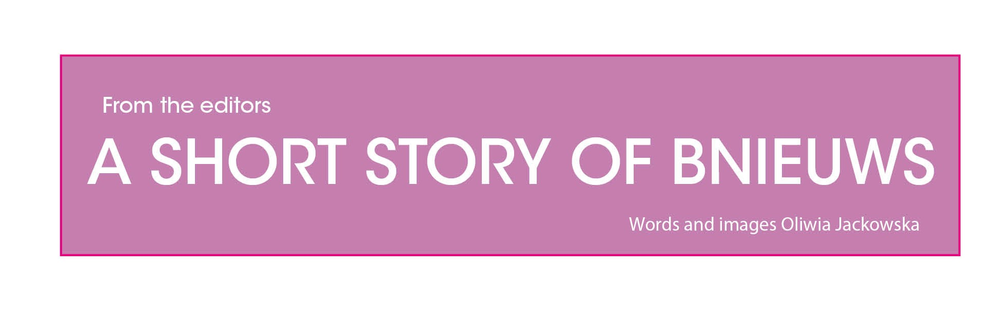
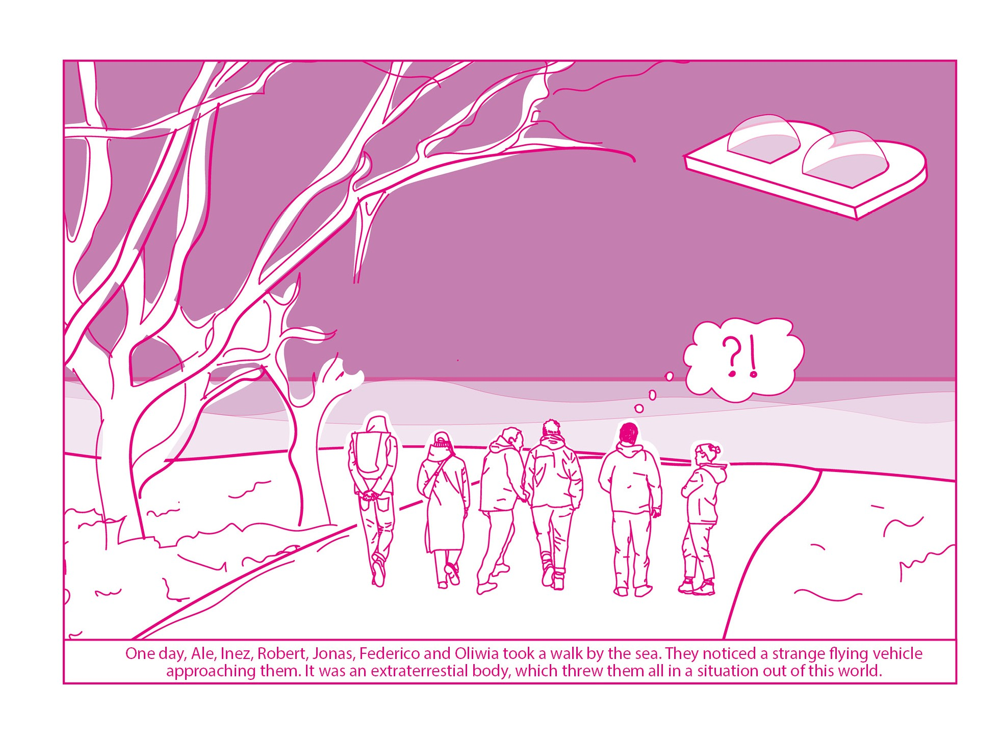
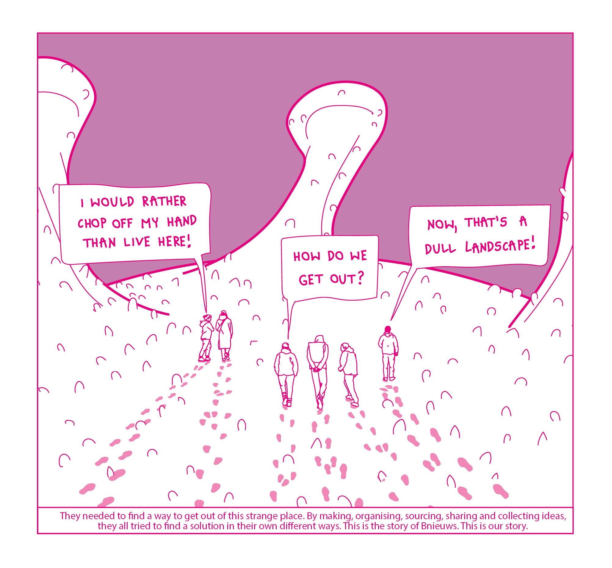
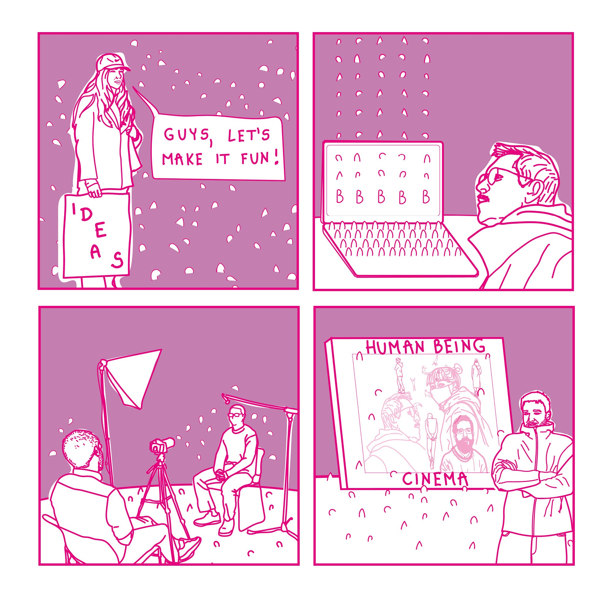
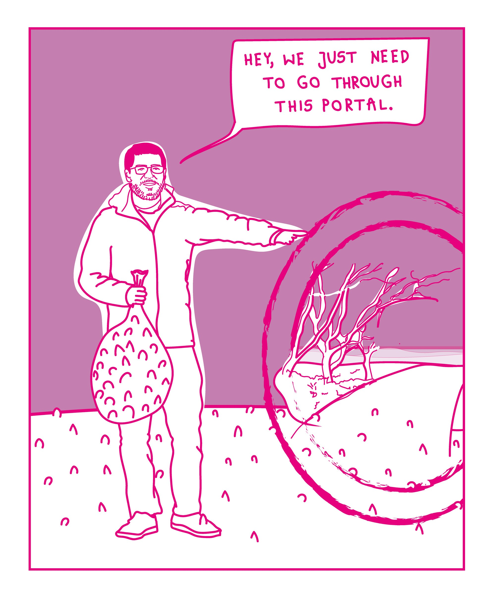
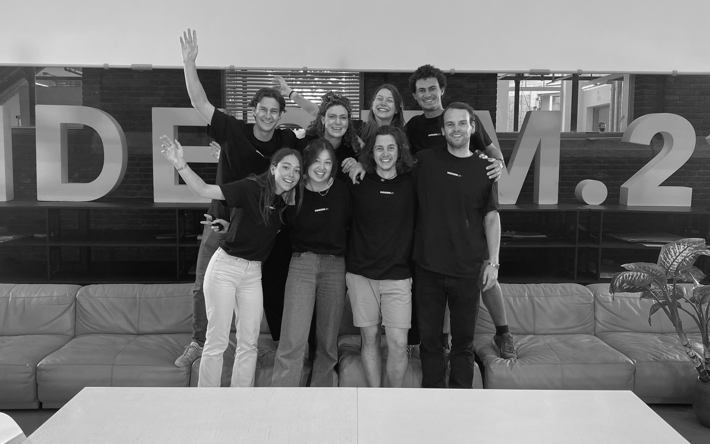
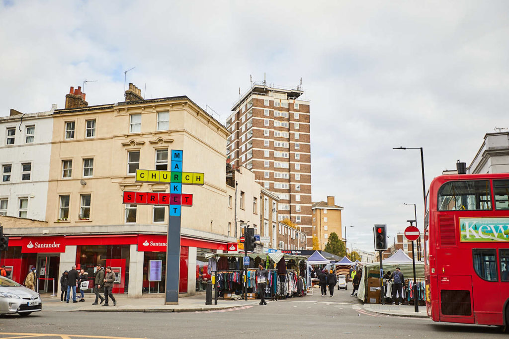

A Short Story of Bnieuws
From the editors
Oliwia Jackowska
Find out about the behind the scenes of the Bnieuws editorial team, who find themselves in a strange situation and need to find a way out.





A Recap of INDESEM.21

10Local Liability

1